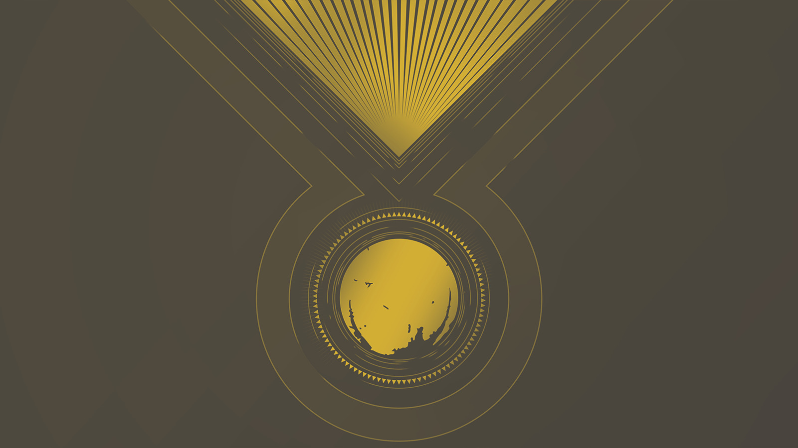

Los hechos más importantes del Futuro Oscuro son:
- Eris Morn cae ante los susurros de la Oscuridad
- El Todopoderoso se estrella con la Última Ciudad
- La Oscuridad corrompe a la mayor parte de los guardianes
- El Guardián no existe, por lo cual Eramis no pudo ser derrotada, la caída del Todopoderoso evitada y el Viajero protegido
